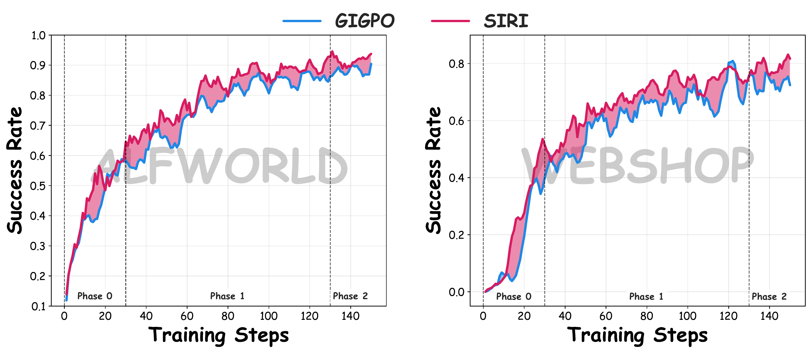
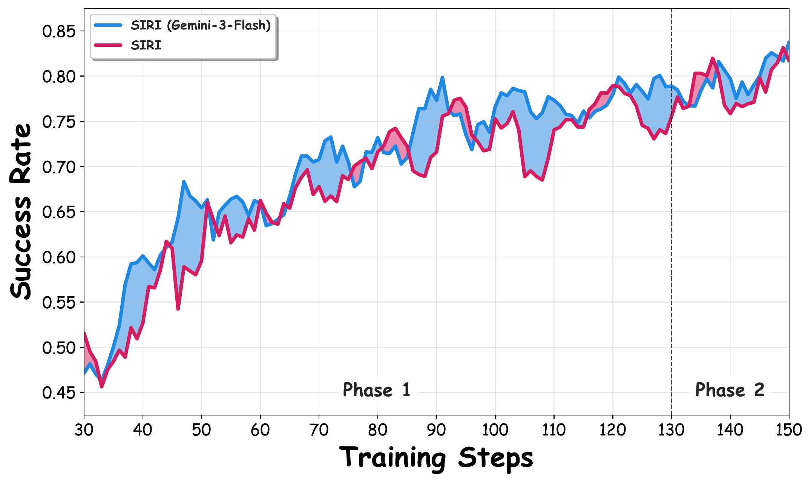
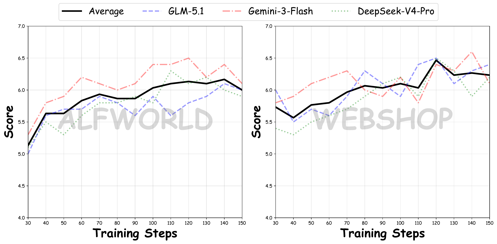

Abstract
Long-horizon LLM agents can benefit from reusable skills, yet existing skill-based methods often rely on external skill generators during training or persistent skill retrieval at inference, increasing engineering complexity, context length, and deployment latency. We propose Self-Internalizing Reinforcement learning with Intrinsic skills (SIRI), a three-phase framework that enables agents to discover, validate, and internalize skills without external skill generators or inference-time skill banks. SIRI first warms up the policy with GiGPO to acquire basic interaction ability and collect successful skill-free trajectories. It then performs self-skill mining, where the current policy summarizes compact skills from its own successful plain rollouts and validates them through paired skill-augmented and skill-free rollouts. Finally, SIRI distills only beneficial skill-guided action tokens into the plain policy using trajectory-level utility and action-level advantage. At inference, the agent runs with the original prompt only. On ALFWorld and WebShop with Qwen2.5-7B-Instruct, SIRI improves GiGPO from 0.908 to 0.930 on ALFWorld and from 0.728 to 0.813 on WebShop, outperforming prompt-based, RL-based, and memory-augmented baselines. Further analysis shows that our self-mining strategy can achieve performance comparable to distillation with closed-source large model.
Framework

Overview of SIRI.
(a) Phase 0: The agent interacts with the environment to collect initial trajectory data for cold-start policy initialization.
(b) Phase 1: Candidate skills are extracted into a structured SkillBank, followed by parallel rollouts with and without skills to compute the hindsight macro utility Δg for dynamic skill evaluation.
(c) Phase 2: The shared policy parameterizes validated skills via cross-context self-distillation under asymmetric inputs, optimized by an advantage-weighted loss ℒint gated by the macro performance indicator 1[Δg(i) > 0].
Phase 0: Policy Warmup
The agent is warmed up with GiGPO to acquire basic interaction ability and collect successful skill-free trajectories as high-quality behavioral evidence for skill mining.
Phase 1: Self-Skill Mining & Utilization
The current policy summarizes compact skills from its own successful plain rollouts. Candidate skills are validated through paired skill-augmented and skill-free rollouts via the hindsight utility Δg.
Phase 2: Skill Internalization
Useful skill-guided action tokens are distilled into the plain policy through cross-context self-distillation, weighted by action-level advantage and gated by trajectory-level utility.
Quantitative Results
Performance on ALFWorld and WebShop. For ALFWorld, we report the success rate on each subtask and the overall average. For WebShop, we report both the average score and the success rate. The best and second-best results among all listed methods are highlighted in bold and underline, respectively.
| Method | ALFWorld | WebShop | |||||||
|---|---|---|---|---|---|---|---|---|---|
| Pick | Look | Clean | Heat | Cool | Pick2 | All | Score | Succ. | |
| API-based LLMs | |||||||||
| Gemini-3-Flash | 0.964 | 0.857 | 0.571 | 0.722 | 0.962 | 0.953 | 0.852 | 0.141 | 0.165 |
| GLM-5.1 | 0.913 | 0.818 | 0.852 | 0.938 | 0.667 | 0.667 | 0.797 | 0.156 | 0.125 |
| Base Model: Qwen2.5-7B-Instruct | |||||||||
| Origin | 0.179 | 0.643 | 0.048 | 0.000 | 0.038 | 0.053 | 0.125 | 0.166 | 0.039 |
| Prompt-based Agentic or Memory-based Methods | |||||||||
| ReAct | 0.485 | 0.354 | 0.343 | 0.132 | 0.182 | 0.176 | 0.312 | 0.462 | 0.195 |
| Reflexion | 0.620 | 0.416 | 0.449 | 0.309 | 0.363 | 0.238 | 0.427 | 0.581 | 0.288 |
| RL-based Methods | |||||||||
| PPO | 0.923 | 0.640 | 0.925 | 0.895 | 0.803 | 0.688 | 0.804 | 0.814 | 0.687 |
| RLOO | 0.876 | 0.782 | 0.873 | 0.813 | 0.719 | 0.489 | 0.755 | 0.803 | 0.657 |
| GRPO | 0.908 | 0.661 | 0.893 | 0.747 | 0.725 | 0.647 | 0.776 | 0.793 | 0.661 |
| GiGPO | 0.977 | 0.827 | 0.988 | 0.837 | 0.893 | 0.792 | 0.908 | 0.844 | 0.728 |
| Memory-Augmented RL-based Methods | |||||||||
| MemRL | 0.628 | 0.385 | 0.222 | 0.125 | 0.080 | 0.000 | 0.214 | 0.295 | 0.092 |
| EvolveR | 0.649 | 0.333 | 0.464 | 0.133 | 0.333 | 0.333 | 0.438 | 0.425 | 0.176 |
| Mem0+GRPO | 0.781 | 0.548 | 0.561 | 0.310 | 0.650 | 0.269 | 0.547 | 0.581 | 0.375 |
| SimpleMem+GRPO | 0.895 | 0.363 | 0.600 | 0.500 | 0.649 | 0.263 | 0.625 | 0.678 | 0.469 |
| SkillRL | 0.979 | 0.714 | 0.900 | 0.900 | 0.955 | 0.875 | 0.899 | 0.852 | 0.727 |
| SIRI (Ours) | 0.975 | 0.875 | 1.000 | 0.857 | 0.850 | 0.895 | 0.930 | 0.899 | 0.813 |
Training Dynamics & Analysis

Training curves on ALFWorld and WebShop, showing that SIRI consistently improves over GiGPO throughout training.

Training success rate trajectories on WebShop, comparing the standard SIRI against a variant utilizing Gemini-3-Flash for skill mining.

LLM-as-a-Judge quality scores for skills stored during training on ALFWorld and WebShop. The solid black line highlights the aggregated mean score across all evaluators, indicating continuous skill improvement.
You can slide to view more results.
Ablation Study on WebShop
Ablation study of SIRI on WebShop. We report the average score and success rate with Qwen2.5-7B-Instruct backbone.
| Method | Score | Success |
|---|---|---|
| w/o Phase 0 | 0.850 | 0.711 |
| w/o Phase 2 (w/ Skill) | 0.898 | 0.805 |
| w/o Phase 2 (w/o Skill) | 0.852 | 0.719 |
| w/o Phase 1 and 2 (GiGPO) | 0.844 | 0.728 |
| SIRI (Full) | 0.899 | 0.813 |
Impact of Base Optimization Algorithm
Impact of different base optimization algorithms (GRPO vs. GiGPO) on the performance of SIRI on WebShop. We report the average score and success rate with Qwen2.5-1.5B-Instruct backbone.
| Method | Score | Success |
|---|---|---|
| GRPO | 0.758 | 0.568 |
| SIRI (GRPO) | 0.779↑0.021 | 0.648↑0.080 |
| GiGPO | 0.831 | 0.650 |
| SIRI (GiGPO) | 0.853↑0.022 | 0.727↑0.077 |
Robustness on a Smaller Backbone (Qwen2.5-1.5B-Instruct)
Performance on ALFWorld and WebShop with Qwen2.5-1.5B-Instruct. For ALFWorld, we report the success rate on each subtask and the overall average. For WebShop, we report both the average score and the success rate. The best and second-best results are highlighted in bold and underline, respectively.
| Method | ALFWorld | WebShop | |||||||
|---|---|---|---|---|---|---|---|---|---|
| Pick | Clean | Cool | Look | Heat | Pick2 | All | Score | Success | |
| Origin | 0.059 | 0.033 | 0.042 | 0.055 | 0.097 | 0.000 | 0.041 | 0.231 | 0.052 |
| ReAct | 0.174 | 0.157 | 0.077 | 0.205 | 0.062 | 0.020 | 0.128 | 0.401 | 0.113 |
| Reflexion | 0.353 | 0.217 | 0.194 | 0.222 | 0.136 | 0.037 | 0.218 | 0.558 | 0.219 |
| PPO | 0.648 | 0.571 | 0.464 | 0.405 | 0.606 | 0.474 | 0.544 | 0.738 | 0.515 |
| RLOO | 0.883 | 0.710 | 0.664 | 0.528 | 0.628 | 0.569 | 0.697 | 0.739 | 0.521 |
| GRPO | 0.853 | 0.845 | 0.597 | 0.537 | 0.782 | 0.535 | 0.728 | 0.758 | 0.568 |
| GiGPO | 0.944 | 0.948 | 0.798 | 0.675 | 0.944 | 0.764 | 0.867 | 0.831 | 0.650 |
| SIRI (Ours) | 0.897 | 1.000 | 0.870 | 0.833 | 0.947 | 0.600 | 0.875 | 0.853 | 0.727 |
Examples of Self-Mined Skills
Each skill abstracts a successful trajectory into a reusable heuristic with applicability conditions, a high-level strategy, and actionable key steps.
Skill Example — ALFWorld
When to apply: When the required object is not found at the initial search location and must be located to proceed with the task.
Strategy: Evaluate the current observation to confirm the object's absence, then systematically navigate to the next most logical storage receptacle based on the object's typical context.
Key steps: Observe the current location | Verify the target object is absent | Identify the next probable storage receptacle | Navigate to the new location
Skill Example — WebShop
When to apply: When a product page is open and specific attribute variations must be chosen to match task requirements.
Strategy: Configure the product by selecting all required options, confirm that constraints like price remain satisfied, and finalize the transaction.
Key steps: Select required item attributes | Verify constraints are met | Execute the purchase action
BibTeX
@article{he2026siri,
title={SIRI: Self-Internalizing Reinforcement Learning with Intrinsic Skills for LLM Agent Training},
author={He, Zhongyu and Li, Yuanfan and Huang, Fei and Chen, Tianyu and Chen, Siyuan and Li, Xingyang and Yu, Meng Hsuan and Liu, Xiangrong and Wei, Leyi and Pan, Lu and Zeng, Ke and Cai, Xunliang},
journal={arXiv preprint arXiv:2606.02355},
year={2026}
}